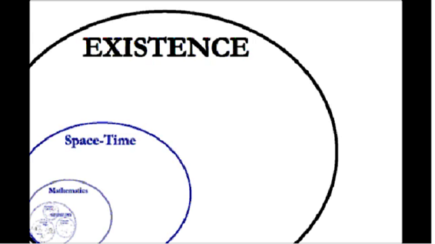
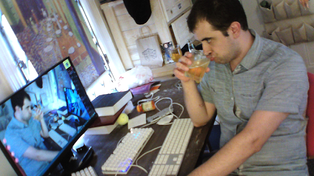

8/3/2018:
Transcript of Heidegger in a Nutshell, a YouTube video by Michael Pearce
[Transcript Start]
1.
The most fundamental philosophical question is: "Why does anything exist at all?"Other ways to phrase the question are: what are the conditions of existence (how is it here?); what does it mean to exist at all (what does it mean to "be here"?); what does it mean to be something (what does it mean to "be" at all?").
The study of this question Heidegger sometimes terms "existential ontology," where "ontology" means the study of how something exists. Therefore, "existential ontology" means the study of how existence itself exists, ([in this sequence of definition,] "how does this box exist?" [precedes] "how does anything exist?").
Heidegger argues rather straightforwardly that this ought to be the most fundamental question because it presupposes everything else we could possibly talk about. Insofar as everything else we could possibly talk about is an existing thing. That is, exists within the set of existing things. This is obviously an excruciatingly difficult subject to articulate, especially because the majority of Western philosophy has completely neglected the issue, forcing Heidegger to contort himself oddly and invent new words and language in order to investigate the issue at all.
Heidegger is willing to do this, however, because he recognized that any attempt to become conscious of one truth necessarily makes other aspects of truth obscure.
Just as a camera lens can only bring into focus one layer of an image at a time while necessarily blurring all the others. For example, an explanation of one's motivations in terms of Jungian typology necessarily leaves unclear those parts of the motivation that [that] typology cannot talk about. By revealing one thing and emphasizing its importance, one necessarily conceals and devalues another.
This is especially evident in language and Heidegger resigns himself to the fact that by inquiring into existential ontology, he necessarily makes a lot of things we're used to seeing clearly quite the opposite of that. This leads directly into the next point.
2.
The answer to the question is: "Because we bring things into our present view." For Heidegger, the reason things exist:As far as human beings can or reasonably should be concerned is simply because we perceive them [(things)] to be. Heidegger is thus a hilghly psychological and existential philosopher regarding the perceiving subject as the center of everything. Things can only exist from our point of view and whatever existence they have apart from us is utterly irrelevant and even nonsensical to mention.
Things are and are the way they are because that is how we represent them to ourselves[.] Things change in their nature for us depending on the point of view from which we view them [as well as ] which traits we emphasize in them at a given point[.] That last sentence leads directly into Heidegger's further point that the most fundamental condition of a thing's existence for us is time.
In other words, in order for a thing to exist for us [and] in order for us to bring it out of concealment and into existence for our subject we are making it[, the thing], present to us by bringing it into our view in the present moment. That is, as I had just said, we emphasize certain traits or aspects to ourselves at a given point in time. Truth is revealed and concealed to us alternatively because we can only view one thing at a time. Hence, the title of Heidegger's magnum opus, Being and Time. [For] Heidegger, Being only occurs in terms of time.
3.
To be human is to retain in present view one's identity as a truth-revealing subject.In other words, when one is not just aware of objects, but adds to this the awareness of one's own subject, (as the means by which these objects have their being), and even the means by which one's own subject has Being for oneself, (in short when one focuses the camera lens on themselves, placing themselves into focus through the mirror of existential ontology, we could say; revealing themselves and concealing all else), and thus understand that the reason anything exists is because they themselves exist as a perceiving subhject. Thus, [they] understand that the reason anything exists is because they themselves exist as a perceiving subject. That is when one is authentically human.
Inasmuch as the true nature of Being is being present in time for one's own subject, then to be human is to present oneself to oneself as a being who does just this. [This is] not unlike a television feed of itself. One becomes ontologically aware one's own pure existence; and with that, the immense capacity and responsibility one has towards oneself as the revealer and concealer of their own world.
This awareness is brought about by the awareness of one's own mortality (i.e. their inevitable death). For this is what awakens us to the nature of time. Suddenly there is a reference point, an end, towards which every other mode of existence or presence is counting down. .
The contrast of death (non-existence) brings the nature of one's existence into sharp relief. One is thus placed in a position already described by Kierkegaard as anxiety or angst. One suddenly realizes that there is an infinitude of concealed things one might might experience but only a finitude of moments in which to reveal them.
We all, in some way or another, flee from this revealing of our own nature by revealing other objects instead. Heidegger calls this "being in the world"[. This is] the opposite of authenticity where one subject is concealed by the continual revelation of objects. One loses oneself in the dance of external necessity and refuses to face the fact that they are responsible for themselves, not anyone or anything else.
However, if one faces and overcomes this angst, one becomes resolved to make the most of oneself as a perceiving subject. By remaining open to the infinitude of possible views that reveal themselves to the subject. Instead willingly concealing them through dogmatic focus on one comfortable view, one embraces their alienation from everything as part and parcel of being human: of being a Being-perceiving being.
In a sense, Heidegger concludes, (along with Socrates), that the unexamined life is not worth living. To help people take ownership of their lives by remaing open to new views of the world is Heidegger's philosophy in a nutshell.
[Transcript End]My thoughts on this transcript:
Roughly this post is a "broad stroke" in how we generate useful thought processes about constructing general, artificial intelligence. For those unfamiliar with the term, general A.I. is what I'm talking about and it is the colloquially understood category of a system that produces a self-aware agent with subjectivity akin to our own as human beings.
Heidegger's concept of authenticity is inescapible in the field of A.I. research, especially as it pertains to general A.I. This is because to form models about which we can conceptualize a "synthetic" self is to force us as researchers to formulate systems based on the fundamental essence of what it means to be human. Specifically, it's an inquiry that is inescapably a pursuit of what defines conscious awareness as a mechanism of being alive and having critical, creative, self-reflexive intelligence.
The study of general A.I. is the inversion of "being-in-the-world" because we are no longer studying objects. Arguably, nor are we studying objective things except the techniques by which we create a functional intelligence in the way we conceive of a machine with practical humanity. Only the techniques of creation are things but we cannot begin to model solutions for this engineering problem if we do not have a properly mechanical definition of what it is that we are creating.